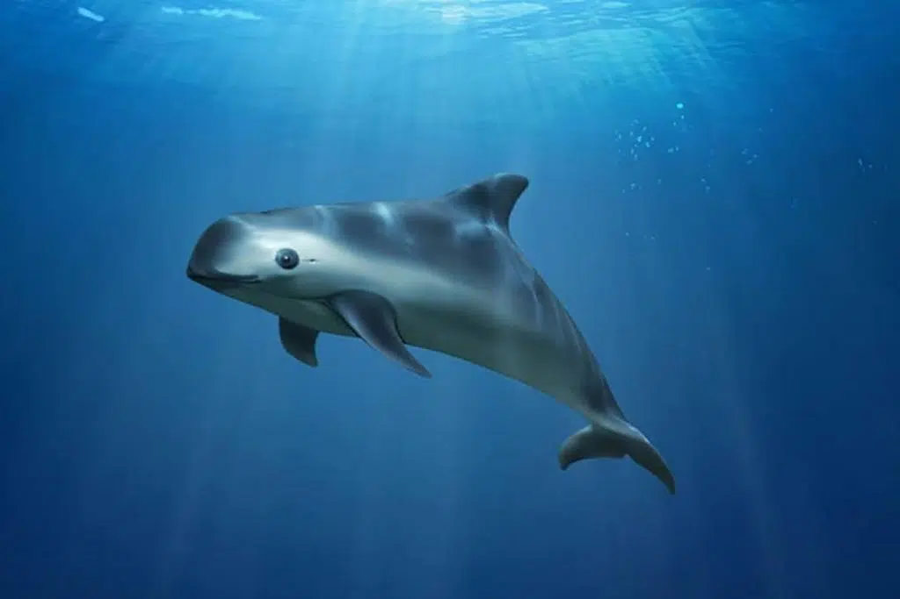
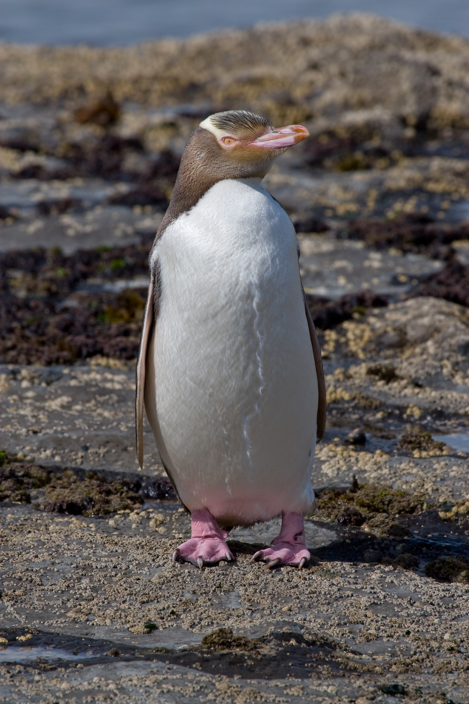
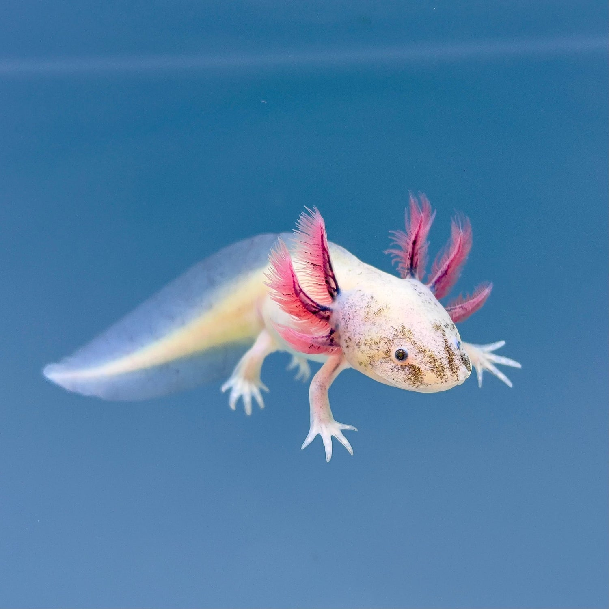
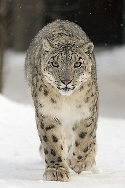

1. Harimau Amur

Harimau Amur, Panthera tigris tigris , juga dikenal sebagai harimau Siberia, adalah salah satu kucing terbesar di dunia.
Penilaian Daftar Merah IUCN terbaru , yang diterbitkan pada tahun 2022, memperkirakan populasinya berkisar antara 265–486 ekor di Timur Jauh Rusia, dengan jumlah yang lebih kecil lagi yang tersebar di perbatasan hingga Tiongkok dan kemungkinan Korea Utara. Harimau Amur pernah dianggap sebagai subspesies terpisah, tetapi sejak 2017 telah diakui sebagai subpopulasi yang secara geografis berbeda dari subspesies harimau daratan, yang secara genetik mirip dengan harimau Bengal, Malaya, dan Indochina.
Pada tahun 1940-an, spesies ini berada di ambang kepunahan dengan kurang dari 50 individu yang tersisa di alam liar. Hal ini disebabkan oleh ketidakstabilan politik yang hampir berkelanjutan selama beberapa dekade, dengan Revolusi Rusia dan pembentukan Uni Soviet.
Pada tahun 1947, setelah Perang Dunia II, Rusia menjadi negara pertama yang melarang perburuan harimau dan menawarkan perlindungan penuh kepada harimau. Perburuan spesies mangsa utama, babi hutan dan rusa, dibatasi oleh kuota tahunan berdasarkan hasil penghitungan populasi. Perburuan liar harimau menjadi relatif jarang karena tidak ada pasar untuk kulit dan produk harimau lainnya, meskipun para pemburu terkadang membunuh "pesaing" mereka ketika ada kesempatan.
Deskripsi:
Harimau Amur adalah salah satu subpopulasi harimau yang lebih besar. Berat rata-rata harimau jantan adalah 160-190 kg, sementara betina lebih kecil, yaitu 110-130 kg. Jantan, betina, dan anak harimau dapat dibedakan berdasarkan jejaknya: bantalan kaki jantan berukuran 10,5-14,5 cm, betina 8,5-9,5 cm, dan anak harimau berukuran 5,5-10 cm. (Anak harimau jantan, setelah satu tahun, biasanya memiliki ukuran kaki yang lebih besar daripada induknya).
Warna bulu harimau Amur adalah oranye terang dibandingkan populasi harimau lainnya, dan warnanya menjadi lebih terang lagi di musim dingin. Bulu mereka lebih panjang dan tebal dibandingkan subpopulasi lain karena iklim yang lebih dingin. Mereka juga memiliki surai tebal di sekitar leher dan bulu ekstra di kaki mereka, yang melindungi mereka dari dingin.
perkembangbiakan:
Kematangan seksual dicapai sekitar usia 4 tahun, tetapi bervariasi tergantung jenis kelamin dan lebih awal pada harimau kebun binatang. Ketika betina siap kawin, ia akan memberi sinyal dengan meninggalkan bekas cakaran dan endapan urin untuk menarik perhatian jantan. Kehamilan berlangsung selama 3 hingga 3,5 bulan, dengan jumlah anak lahir 1-6, namun yang paling umum adalah 2-4.
Umur Panjang:
Di alam liar, mereka dapat hidup antara 10-15 tahun, tetapi di penangkaran, mereka hidup mendekati usia 20 tahun.
▶ Tonton di YouTube2. Badak Jawa

Salah satu hewan paling langka di dunia yang kini hanya tersisa di Taman Nasional Ujung Kulon.
“Dahulu badak jawa tersebar di sebagian besar wilayah Asia Tenggara mulai dari Assam-India, Myanmar, Thailand, Malaysia dan sebelumnya ada di Vietnam dan dinyatakan punah pada tahun 2010,” cerita Prof Harini.
“Jadi, badak jawa yang ada di Indonesia, khususnya di TNUK adalah satu-satunya di dunia. Ini merupakan suatu kebanggaan bahwa kita memiliki salah satu jenis badak yang kita konservasikan,” ujarnya dalam wawancara bersama reporter IPB University, Selasa (30/7).
Prof Harini menjelaskan bahwa badak jawa masuk dalam kategori critically endangered atau terancam punah dalam International Union for Conservation of Nature (IUCN) Red List. Spesies ini juga tercantum dalam Apendiks I CITES, sehingga dilarang keras untuk diperdagangkan karena jumlah populasinya yang sangat terbatas.
Data terbaru dari Balai TNUK menunjukkan, populasi badak jawa saat ini diperkirakan hanya berkisar antara 87 hingga 100 ekor. Jumlah tersebut diperoleh melalui metode Model Spatial Count berdasarkan deteksi kehadiran badak di lokasi pengamatan.
Sebagai upaya pelestarian, sejak 2009 telah dikembangkan kawasan khusus bernama Javan Rhino Study and Conservation Area (JRSCA) seluas 5.100 hektare di bagian selatan Gunung Honje dalam kawasan TNUK. Kawasan ini diperuntukkan bagi perluasan habitat dan pengembangbiakan intensif badak jawa.
“Fasilitas JRSCA sudah siap, termasuk kandang pengembangbiakan, serta bangunan untuk peneliti dan petugas. Saat ini tengah dipersiapkan translokasi badak dari habitat utama menuju kawasan JRSCA,” ungkapnya.
Namun demikian, Prof Harini juga menyoroti sejumlah ancaman terhadap kelangsungan hidup badak jawa. Ancaman internal meliputi potensi inbreeding, persaingan dan pemangsaan antarsatwa, serta degradasi habitat akibat invasi tumbuhan langkap.
Sementara itu, ancaman eksternal mencakup wabah penyakit dari hewan ternak, perburuan liar, dan potensi bencana alam seperti tsunami dan erupsi Gunung Krakatau.
Ia menegaskan bahwa punahnya badak jawa akan berdampak besar terhadap keseimbangan ekosistem, karena sebagai herbivora besar, spesies ini berperan dalam mengontrol vegetasi dan menjaga struktur rantai makanan. “Badak jawa bukan hanya kekayaan hayati Indonesia, tetapi juga warisan dunia yang harus dijaga bersama,” pungkasnya.
▶ Tonton di YouTube3. Gorilla Gunung

Gorila besar yang hidup di pegunungan Afrika Tengah.
Populasi gorila gunung terkecil di dunia—subspesies gorila timur—terbagi menjadi dua, dan para ilmuwan telah memperdebatkan apakah mereka mungkin merupakan dua subspesies yang terpisah. Lebih dari separuhnya hidup di Pegunungan Virunga, rangkaian gunung berapi yang telah punah yang berbatasan dengan Republik Demokratik Kongo, Rwanda, dan Uganda. Sisanya dapat ditemukan di Taman Nasional Bwindi Impenetrable di Uganda. Sejak penemuan subspesies gorila gunung pada tahun 1902, populasinya telah bertahan hidup selama bertahun-tahun akibat perang, perburuan, perusakan habitat, dan penyakit—ancaman yang begitu parah sehingga pernah diperkirakan spesies ini akan punah pada akhir abad ke-20.
Namun, sebagian besar berkat upaya berkelanjutan selama puluhan tahun dan kolaborasi Program Konservasi Gorila Internasional (IGCP), sebuah koalisi unik yang terdiri dari tiga organisasi konservasi internasional, WWF, Conservation International (CI), dan Fauna & Flora International (FFI), jumlah gorila gunung terus meningkat meskipun menghadapi tantangan yang berkelanjutan ini. Bersama FFI dan African Wildlife Foundation (AWF), WWF adalah salah satu anggota pendiri IGCP, dan bersama mitra nasional dan lokal, berkontribusi pada kisah sukses konservasi ini dan terus memastikan kelangsungan hidup gorila gunung dalam jangka panjang.
Sesuai namanya, gorila gunung hidup di hutan yang tinggi di pegunungan, pada ketinggian 8.000 hingga 13.000 kaki. Mereka memiliki bulu yang lebih tebal, dan lebih banyak, dibandingkan kera besar lainnya. Bulu tersebut membantu mereka bertahan hidup di habitat yang suhunya seringkali turun di bawah titik beku. Namun, seiring manusia semakin banyak memasuki wilayah gorila, gorila telah terdorong lebih jauh ke pegunungan untuk waktu yang lebih lama, memaksa mereka untuk bertahan hidup dalam kondisi berbahaya dan terkadang mematikan.
Pemulihan populasi gorila gunung, terlepas dari konflik sipil yang terus berlanjut, perburuan liar, dan populasi manusia yang terus meningkat di salah satu wilayah paling bergejolak di Afrika, merupakan pencapaian konservasi yang luar biasa. Namun, meskipun gorila gunung adalah satu-satunya kera besar yang populasinya terus meningkat, mereka tetap merupakan spesies yang bergantung pada konservasi dan terus membutuhkan perlindungan serta pengelolaan habitat agar dapat bertahan hidup.
▶ Tonton di YouTube4. Vaquita
Lumba-lumba terkecil di dunia dan paling langka.
Mamalia laut yang paling terancam keberadaanya di dunia masih punya peluang untuk bertahan walaupun hanya ada sekitar 10 ekor di alam, menurut studi genetika.
Porpoise vaquita diambang kepunahan namun para ilmuwan mengatakan tes DNA menunjukkan populasi mamalia ini secara genetika masih memungkinan bertahan.
Jenis mamalia ini hanya hidup di Teluk Meksiko, California.
Namun, keberlangsungannya terancam karena ditangkap dengan menggunakan jaring besar yang dikenal sebagai gillnets atau jaring insang.
"Studi yang kami lakukan secara sangat jelas menunjukkan bahwa vaquita memiliki peluang sangat bagus untuk mencegah kepunahan, bila kita dapat melindungi dengan mencabut jaring insang dari habitat mereka," kata peneliti studi, Dr Jacqueline Robinson dari University of California, San Francisco.
Ia mengatakan tak ada alasan untuk menyimpulkan bahwa vaquita akan segera punah karena sangat kecilnya populasi yang ada.
"Itu semua tergantung pilihan kita dan tindakan kita untuk memberikan vaquita, peluang untuk hidup," tambahnya.
Sebagian kalangan sudah putus asa untuk mempertahankan vaquita, dengan menyatakan walaupun spesies ini dapat dilindungi dari ancaman jaring penangkap ikan, dampak kelangsungan mereka untuk dibiakkan tersendiri sangat sulit.
Tetapi studi yang diterbitkan di Science, menyebut vaquita dapat bangkit kembali dari ambang kepunahan, bila habitanya benar-benar dilindungi.
"Mereka memiliki peluang tinggi untuk bertahan selama 50 tahun ke depan, bila mendapatkan perlindungan penuh," kata Dr Robinson.
Para peneliti menganalisis DNA dari vaquitayang ditangkap antara 1985-2017, yang sangat dekat spesiesnya dengan populasi yang ada sekarang. Peneliti mengembangkan model komputer untuk memprediksi bagi populasi vaquita berubah dalam 50 tahun ke depan berdasarkan temuan genetika mereka.
Spesies ini memang tercatat sangat langka dalam waktu yang cukup lama. Variasi genetika mamalia ini juga rendah sehingga risiko berkembang biak di antara mamalia yang ada juga rendah. Para peneliti percaya, penelitian ini juga menjadi pelajaran untuk mempertahankan spesies langka lain, seperti yang tinggal di pulau-pulau atau di tempat yang sulit dijangkau.
Tetapi menyelamatkan vaquita tidaklah mudah karena ketegangan antara pihak konservasi dan masyarakat lokal, serta ketegangan diplomatik karena penerapan larangan mencari ikan oleh pemerintah Meksiko.
Upaya melarang penggunaan jaring insang ditentang komunitas nelayan. Perdagangan ilegal ikan langka yang disebut totoaba juga memicu semakin langkahnya vaquita dan spesies laut lainnya yang terjerat di jaring raksasa.
Totoaba adalah salah satu makanan laut yang paling banyak dikonsumsi sebelum ditetapkan pemerintah Meksiko sebagai hewan yang nyaris punah.
Sirip ikan, organ yang membuat ikan ini mengambang, sangat dicari di China, sebagai bahan yang ampuh untuk obat, walaupun belum terbukti secara ilmiah.
▶ Tonton di YouTube5. Orangutan Tapanuli

Orangutan paling langka di dunia dan hanya ada di Sumatra.
Jakarta, CNBC Indonesia - Di Sumatera Utara terdapat kawasan habitat orang utan Tapanuli (Pongo tapanuliensis) yang menyusut drastis. Hal ini mengakibatkan, spesies kera besar asli Sumatra tersebut makin terancam punah.
Melansir informasi dari IFL Science saat ini hanya ada sekitar 800 orang utan Tapanuli yang masih hidup berkeliaran di kawasan kecil di Batang Toru. Habitat mereka juga terus menyusut, sudah berkurang 60 persen pada periode antara 1985 dan 2007.
Penurunan drastis luas habitat di Batang Toru membuat orang utan Tapanuli sebagai spesies orang utan yang paling terancam punah. Orang utan Tapanuli padahal adalah kera besar "paling baru", baru digolongkan sebagai spesies terpisah pada 2017. Status orang utan Tapanuli dalam IUCN, kini adalah "Critically Endangered."
Habitat Pongo tapanuliensis di hutan Sumatra Utara terus menerus terkikis oleh alih fungsi lahan menjadi area perkebunan dan industri. Upaya konservasi yang diharapkan makin agresif dengan status spesies sendiri tidak terealisasi.
"Sejak spesies diumumkan, tidak banyak yang berubah. Tadinya orang berpikir spesies baru orang utan, bakal mendorong dunia untuk ramai-ramai berusaha menyelematkannya. Sayangnya, orang utan Tapanuli menghadapi ancaman yang sama seperti yang mereka hadapi pada 2017," kata Amanda Hurowitz dari Mighty Earth, seperti dikutip oleh IFL Science.Ancaman yang dihadapi antara lain adalah deforestasi ilegal, perburuan ilegal, dan perdagangan bayi orang utan. Di wilayah Batang Toru, juga ada proyek pembangunan bendungan dan proyek pertambangan emas yang makin meluas ke wilayah habitat orang utan.
Namun, orang utan Tapanuli juga mulai terlihat di wilayah lain. Bulan lalu, ilmuwan dari Yayasan Orang Utan Sumatra Lestari menemukan orang utan Tapanuli hidup di hutan rawa yang jaraknya 32 kilometer dari area Batang Toru.
▶ Tonton di YouTube6. Panda Raksasa

Panda adalah simbol pelestarian hewan liar di dunia.
Panda raksasa ( Ailuropoda melanoleuca ) adalah beruang dengan warna hitam-putih mencolok yang menghuni hutan bambu di pegunungan Tiongkok tengah . Warnanya, dipadukan dengan tubuh besar dan wajah bulatnya, memberikan penampilan menawan yang membuatnya disayangi orang-orang di seluruh dunia. Menurut Daftar Merah Spesies Terancam IUCN , diperkirakan kurang dari 1.900 panda masih hidup di alam liar.
Panda jantan besar dapat mencapai panjang 1,8 meter (6 kaki) dan berat lebih dari 100 kg (220 pon); betina biasanya lebih kecil. Telinga hitam bundar dan bercak mata hitam menonjol di wajah dan leher putih. Anggota badan, ekor, kaki, dan bahu hitam kontras dengan tubuh putih. Cakar belakang mengarah ke dalam, yang membuat panda berjalan terhuyung-huyung. Panda dapat dengan mudah berdiri dengan kaki belakangnya dan umumnya terlihat jungkir balik, berguling, dan mandi debu. Meskipun agak canggung sebagai pemanjat, panda mudah memanjat pohon dan, berdasarkan kemiripannya dengan beruang, kemungkinan besar mampu berenang. Ciri anatomi yang tidak biasa adalah pembesarantulang pergelangan tangan yang berfungsi seperti ibu jari, yang memungkinkan panda menangani makanan dengan ketangkasan yang cukup besar .
Sejarah alam
Sebanyak 90–98 persen makanan panda terdiri dari daun, pucuk, dan batangBambu , rumput besar yang tersedia sepanjang tahun di sebagian besar wilayah hutan Tiongkok. Meskipun kaki depan, gigi, dan rahangnya telah beradaptasi untuk mengonsumsi bambu , panda raksasa tetap mempertahankanSistem pencernaan nenek moyang karnivora dan karena itu tidak dapat mencerna selulosa , konstituen utama bambu. Panda mengatasi masalah ini dengan cepat melewati sejumlah besar rumput melalui saluran pencernaan mereka setiap hari. Sebanyak 16 dari setiap 24 jam dihabiskan untuk makan, dan pembuangan limbah terjadi hingga 50 kali per hari. Sisa-sisa gigi yang membatu menunjukkan bahwa panda raksasa berkomitmen pada bambu sebagai sumber makanan utamanya setidaknya tiga juta tahun yang lalu. Meskipun tidak dapat menangkap mangsa, panda mempertahankan selera untuk daging, yang digunakan sebagai umpan untuk menangkap mereka untuk radio collaring dan terkadang menjadikan mereka hama di kamp manusia. Spesies ini tidak dapat bertahan hidup secara alami di luar hutan bambu, meskipun di penangkaran mereka telah dipelihara dengan sereal, susu, dan buah-buahan serta sayuran kebun. Bambu adalah makanan yang lebih sehat untuk panda penangkaran.
Sifat soliter panda raksasa ditegaskan oleh ketergantungannya pada indraPenciuman (olfaksi). Setiap hewan membatasi aktivitasnya pada rentang sekitar 4 hingga 6 km persegi (1,5 hingga 2,3 mil persegi), tetapi wilayah jelajah ini seringkali tumpang tindih secara substansial. Dalam pengaturan ini, aroma berfungsi mengatur kontak antar individu. Kelenjar aroma besar yang terletak tepat di bawah ekor dan mengelilingi anus digunakan untuk meninggalkan pesan penciuman bagi panda lain. Kelenjar ini digosokkan ke pohon, batu, dan rumpun rumput, dengan aroma yang menyampaikan informasi tentang identitas, jenis kelamin, dan kemungkinan status sosial individu yang menandai. Analisis kimia tanda menunjukkan perbedaan fungsi antara jantan dan betina. Jantan tampaknya menggunakan aroma untuk mengidentifikasi area tempat tinggal mereka, sementara betina terutama menggunakannya untuk menandakan estrus . Kecuali untuk perawatan bayi oleh induknya, satu-satunya aktivitas sosial panda terjadi selama estrus betina, yang terjadi setiap tahun selama musim semi dan berlangsung satu hingga tiga hari. Musim kawin musim semi (Maret–Mei) dan musim kelahiran musim gugur (Agustus–September) terlihat pada populasi liar dan penangkaran. Jantan tampaknya menemukan betina pertama-tama melalui aroma dan akhirnya melalui vokalisasi. Tercatat ada satu hingga lima jantan yang berkumpul untuk setiap betina. Pada saat ini, jantan dapat menjadi sangat agresif karena bersaing untuk mendapatkan kesempatan kawin.
eperti beruang , panda raksasa mengalamiPenundaan implantasi sel telur yang telah dibuahi ke dalam dinding rahim, yaitu periode dua hingga tiga bulan setelah perkawinan. Kadar hormon dalam urin betina menunjukkan bahwa periode pertumbuhan dan perkembangan embrio/janin hanya berlangsung sekitar dua bulan. Secara keseluruhan, rata-rata masa gestasi adalah 135 hari (dengan rentang 90–184 hari), tetapi karena fase pertumbuhan yang singkat, berat janin cukup bulan hanya sekitar 112 gram (4 ons) rata-rata. Dibandingkan dengan induknya, panda raksasa menghasilkan keturunan terkecil dari semua mamalia plasenta (sekitar 1/800 berat induknya). Selama dua hingga tiga minggu pertama kehidupannya, induknya menggunakan kaki depannya dan tulang pergelangan tangannya yang seperti ibu jari untuk memeluk dan memosisikan bayinya dengan cara yang tidak seperti karnivora dan hampir seperti manusia. Hampir setengah dari 133 kelahiran di penangkaran yang tercatat sebelum tahun 1998 adalah...kembar , tetapi induk panda biasanya tidak mampu mengasuh lebih dari satu bayi. Alasan ukuran keturunan yang sangat kecil dan seringnya kelahiran kembar belum dipahami, tetapi keduanya merupakan sifat yang dimiliki beruang.
Panda yang baru lahir buta dan hanya ditutupi bulu tipis berwarna putih. Ia hampir tidak berdaya, hanya bisa menyusu dan bersuara. Ia bergantung pada induknya untuk kehangatan, nutrisi, posisi di payudara, dan merangsang keluarnya kotoran. Perkembangannya lambat selama bulan-bulan awal. Mata mulai terbuka sekitar 45 hari, dan langkah pertama yang goyah diambil pada 75–80 hari. Keadaannya yang tidak berdaya mengharuskan kelahiran di sarang, lingkungan tempat ia hidup selama 100–120 hari pertama kehidupannya. Sekitar usia 14 bulan, saat gigi susu telah tumbuh, bayi siap mengonsumsi bambu, dan pada usia 18–24 bulan penyapihan dari induknya terjadi. Pemisahan dari induknya harus terjadi sebelum seekor betina dapat melakukan produksi anak berikutnya. Panda yang ditangkarkan dapat hidup lebih dari 30 tahun di penangkaran, tetapi masa hidup di alam liar diperkirakan sekitar 20 tahun.
Konservasi dan klasifikasi
Fosil-fosil dari Myanmar utara dan Vietnam serta sebagian besar Tiongkok hingga ke utara Beijing menunjukkan bahwa panda raksasa tersebar luas di seluruh Asia timur selama Zaman Pleistosen awal (2,6 juta hingga 11.700 tahun yang lalu).perusakan habitat hutannya, dikombinasikan denganPerburuan liar , telah membatasi spesies ini pada fragmen-fragmen habitat pegunungan terpencil di sepanjang tepi timur Dataran Tinggi Tibet di provinsi-provinsi Tiongkok Sichuan (Szechwan) , Shaanxi (Shensi) , dan Gansu (Kansu) . Luas total habitat ini sekitar 13.000 km persegi (5.000 mil persegi), dan akhir-akhir ini pembungaan massal dan kematian bambu secara berkala telah menyebabkan kelaparan bagi beberapa populasi. (Diperlukan waktu lima hingga 10 tahun bagi hutan bambu untuk pulih dari peristiwa-peristiwa alam ini.) Sejak tahun 1990-an Tiongkok telah memperluas upaya konservasinya, dan sekarang menganggap panda sebagai harta nasional. Sistem cagar alam telah diperluas dari 14 lokasi menjadi lebih dari 40, dan pengaturan internasional yang kooperatif telah dilaksanakan untuk menyediakan pelatihan dalam pengelolaan cagar alam dan penangkaran.pembiakan . Panda telah lama dianggap sebagaispesies yang terancam punah oleh IUCN, tetapi organisasi lingkungan mengubah status panda menjadi “rentan ” pada tahun 2016, karena keberhasilan Tiongkok dalam memulihkan habitat hutan bambu.
Era pemberian panda sebagai hadiah dan pinjaman komersial jangka pendek kepada kebun binatang sebelumnya telah digantikan oleh perjanjian pinjaman yang menghasilkan dana untuk pelestarian populasi liar. Lebih dari 120 panda dipelihara di penangkaran di Tiongkok, dan 15 hingga 20 lainnya ditemukan di kebun binatang di tempat lain. Populasi penangkaran terus meningkat.Su-Lin, panda raksasa pertama yang dipamerkan di Barat, tiba di Amerika Serikat saat masih bayi pada tahun 1936 dan menjadi objek wisata populer di Kebun Binatang Brookfield , dekat Chicago, hingga kematiannya pada tahun 1938. Tidak ada orang Eropa yang mengamati panda raksasa hidup di alam liar hingga ekspedisi Walter Stötzner tahun 1913–15, meskipunArmand David , seorang misionaris Vincentian , menemukan beberapa bulu panda pada tahun 1869.
Klasifikasi panda raksasa telah lama menjadi subjek kontroversi. Data anatomi, perilaku, dan biokimia telah digunakan untuk menempatkan panda bersama beruang (famili Ursidae), rakun (Procyonidae ) , atau dalam famili mereka sendiri (Ailuridae). Analisis molekuler yang disempurnakan yang dilakukan pada tahun 1990-an menunjukkan bahwa beruang adalah kerabat terdekat panda raksasa, dan banyak karakteristik perilaku dan reproduksi mereka konsisten dengan penempatan ini.
▶ Tonton di YouTube7. Komodo

Reptil raksasa dari Indonesia.
Indonesia memiliki begitu banyak ragam hewan endemik. Salah satunya komodo. Kadal besar yang memiliki nama latin Varanus komodoensis ini hidup di Nusa Tenggara Timur, seperti Pulau Rinca, Pulau Flores, Giliran Motang, Gili Dasami dan Pulau Komodo.
Komodo telah menarik perhatian sejumlah peneliti karna memiliki keunikan tersendiri dibanding hewan-hewan lainnya. Berikut beberapa fakta menraik tentang komodo.
1. Hewan Purba yang Masih Bertahan di Zaman Modern
Komodo merupakan salah satu spesies hewan langka yang dilindungi di Indonesia. Komodo diperkirakan berasal dari spesies kadal Afrika dari zaman purba. Ahli biologi Alison Murray dan Rob Holmes mengatakan bahwa tulang belakang komodo dan kerangka kadal Afrika yang berusia 33 juta tahun lalu memiliki kemiripan.
Para peneliti itu menyimpulkan bahwa komodo memiliki kekerabatan dengan jenis hewan tersebut. Ia juga mengatakan bahwa Komodo baru muncul 700 ribu tahun lalu setelahnya. Murray mengatakan bahwa misteri bagaimana komodo bisa menyebar hingga ke Asia itu kian dalam ketika kita memikirkan geografi dunia di masa lalu.
“Sejak 100 juta tahun lampau hingga 12 juta tahun lalu, Afrika benar-benar terisolasi, dikelilingi oleh samudra, entah bagaimana mereka bisa keluar dari Afrika pada periode itu,” kata Murray. “Itulah mengapa makalah ini amat penting, karena tak ada hubungan dataran antara Afrika dan Indonesia.”
Murray mengatakan salah satu teori bagaimana Varanus pergi dari Afrika adalah lempengan mikro atau massa dataran kecil bergerak dari satu tempat ke tempat lain, membawa binatang di dalamnya berpindah tempat. Namun teori itu belum terbukti.
2. Memiliki Bisa yang Mematikan
Komodo merupakan kadal terbesar di dunia yang mempunyai berbagai macam senjata mematikan di dalam tubuhnya. Penelitian oleh University of Melbourne mengungkapkan bahwa bisa yang terdapat dalam sebuah kelenjar di mulut komodo mengandung bakteri pasteurella. Ketika menggigit lawannya, komodo akan menyebabkan luka yang sangat rawan menimbulkan infeksi.
Dikutip dari Journal of Wildlife Diseases, air liur komodo juga memiliki berbagai bakteri mematikan lainnya, yaitu terdapat 28 bakteri gram-negatif (escherichia coli) dan 19 bakteri gram-positif (patogen). Bakteri yang terisolasi dalam liur komodo ini menyebabkan septikemia, yakni kondisi peradangan serius akibat infeksi.
Sebagian besar yang terkena gigitan komodo, baik manusia ataupun hewan, akan mengalami infeksi selama satu atau dua hari atau bahkan dapat menyebabkan kematian.
3. Memiliki Gigi Ajaib
Ketika memangsa, gigi komodo tidak hanya digunakan untuk mengunyah, melainkan juga untuk menelan mangsanya secara langsung. Jika mangsanya terlalu keras untuk dilahap dan dicengkram, gigi komodo akan tanggal. Namun, dalam waktu tiga hari gigi akan tumbuh kembali.
▶ Tonton di YouTube8. Penguin Mata Kuning
Penguin langka dari Selandia Baru.
Penguin bermata kuning atau Megadyptes antipodes adalah salah satu penguin paling langka di dunia yang hanya ditemukan di Selandia Baru. Ciri khasnya adalah mata berwarna kuning keemasan dan garis bulu kuning pucat di sekitar kepala.
Mereka hidup di pantai berbatu, hutan pantai, dan semak-semak yang sunyi. Dibandingkan penguin lainnya, spesies ini terkenal pemalu dan lebih suka menyendiri, baik saat berburu maupun membuat sarang.
Secara fisik, penguin ini memiliki tinggi sekitar 60–70 cm, berat 5–8 kg, dengan dada putih serta punggung abu-abu gelap. Warna matanya yang kuning menjadikannya mudah dikenali.
Makanan utama mereka adalah ikan kecil, cumi-cumi kecil, dan crustacea. Penguin bermata kuning mampu menyelam hingga 120 meter untuk mencari makan. Mereka juga dikenal setia pada satu pasangan (monogami) dan merawat anak mereka bersama-sama.
Sayangnya, populasi penguin bermata kuning kini sangat terancam akibat penyakit, predator seperti anjing dan kucing liar, perubahan iklim, kerusakan habitat, dan polusi laut. Diperkirakan hanya kurang dari 4.000 ekor yang tersisa.
▶ Tonton di YouTube9. Axolotl
Amfibi unik dari Meksiko.
Axolotl adalah hewan amfibi yang berasal dari Danau Xochimilco di Meksiko dan dikenal di seluruh dunia sebagai salah satu makhluk paling unik karena kemampuannya meregenerasi hampir semua bagian tubuhnya mulai dari kaki ekor rahang hingga sebagian jantung dan jaringan saraf sehingga menjadikannya hewan yang sangat penting dalam penelitian ilmiah. Axolotl memiliki bentuk tubuh mirip salamander dengan insang berbentuk rumbai yang mencolok di sisi kepalanya yang berfungsi untuk bernapas di dalam air dan ciri unik lainnya adalah sifat neotenik yaitu tetap berada dalam bentuk larva sepanjang hidupnya sehingga tidak mengalami metamorfosis menjadi salamander darat seperti amfibi lain dan karena itu seluruh hidupnya dihabiskan di air.
Warna tubuh axolotl di alam biasanya coklat gelap berbintik namun dalam penangkaran muncul banyak variasi warna seperti pink pucat putih keemasan hingga hitam pekat yang membuatnya semakin populer sebagai hewan peliharaan meskipun popularitas ini juga membawa ancaman terhadap kelangsungan hidupnya di alam liar. Ukuran axolotl umumnya berkisar antara lima belas hingga empat puluh lima sentimeter dengan tubuh yang lunak mata kecil tanpa kelopak serta ekor lebar untuk berenang.
Saat ini axolotl masuk kategori kritis terancam punah menurut IUCN dan populasinya di habitat asli menurun sangat drastis. Penyebab utama penurunan ini adalah kerusakan habitat akibat pembangunan dan urbanisasi yang mengubah danau dan kanal Xochimilco menjadi permukiman dan area pertanian modern kemudian pencemaran air yang berasal dari limbah rumah tangga dan industri yang mengganggu kualitas air tempat axolotl hidup lalu munculnya spesies ikan invasif seperti tilapia dan carp yang memakan telur serta anakan axolotl dan terakhir meningkatnya perdagangan ilegal yang menangkap axolotl dari alam untuk dijual sebagai hewan peliharaan.
Dalam ekosistem air tawar axolotl berperan penting sebagai predator kecil yang menjaga keseimbangan populasi cacing larva serangga dan ikan kecil sehingga hilangnya axolotl dari alam bisa mengganggu stabilitas ekosistem. Di dunia sains axolotl sangat dihargai karena kemampuan regenerasinya yang luar biasa sehingga banyak penelitian medis menggunakannya untuk mempelajari penyembuhan luka perkembangan sel dan potensi pengobatan penyakit manusia.
Upaya pelestarian axolotl dilakukan melalui restorasi habitat Xochimilco pembuatan area konservasi berbentuk kanal-kanal bersih yang dilindungi program penangkaran besar yang dilakukan universitas dan lembaga konservasi di Meksiko serta penyuluhan kepada masyarakat untuk mengurangi pencemaran dan mencegah pembelian axolotl dari sumber ilegal. Dengan perlindungan yang tepat dan kesadaran masyarakat axolotl berpeluang untuk dipertahankan dan populasinya dapat kembali meningkat di habitat alaminya.
▶ Tonton di YouTube10. Snow Leopard
Kucing besar dari pegunungan Asia Tengah.
Snow leopard atau macan tutul salju adalah kucing besar yang hidup di pegunungan tinggi Asia Tengah seperti Himalaya Mongolia dan Tiongkok dengan bulu tebal abu keperakan serta totol hitam yang membantu mereka berkamuflase di wilayah bersalju. Mereka memiliki ekor panjang berbulu yang menjaga keseimbangan saat bergerak di tebing curam sekaligus membantu menghangatkan tubuh di suhu ekstrem. Snow leopard adalah pemburu lincah yang mampu melompat jauh dan biasanya memangsa domba biru bharal kijang gunung dan hewan pegunungan lainnya namun tetap dikenal pemalu dan jarang terlihat manusia.
Hewan ini termasuk terancam punah karena perburuan liar hilangnya habitat berkurangnya mangsa alami serta konflik dengan peternak ketika snow leopard memangsa ternak. Populasinya diperkirakan hanya sekitar beberapa ribu di alam liar sehingga pelestarian sangat penting dilakukan. Snow leopard memiliki peran penting dalam menjaga keseimbangan ekosistem pegunungan dengan mengatur populasi hewan herbivor. Upaya pelestarian dilakukan melalui perlindungan habitat pemasangan kamera jebak program kerja sama internasional serta edukasi masyarakat agar tidak melakukan perburuan.
▶ Tonton di YouTube